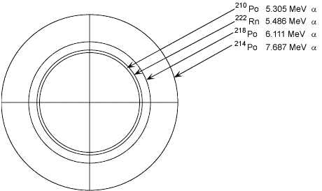

Die winzigen Gewaltevolutionen: Das Po-Halo-Rätsel
Ein Amateurlforscher untersucht pegmatitischen Biotit-Muskovit

[Hiermit wird die Vervielfältigung und Verbreitung gestattet.]
Zusammenfassung
Mica-Proben (var. Biotit) aus Pegmatiten in zwei Bundesstaaten [Nordkarolina: Spruce Pine District und South Dakota: Harney Peak Batholith (Black Hills)] werden unter dem Mikroskop untersucht. Radioaktive Zerfallsreihen von Elementen und Energien von Alpha-Teilchen werden erforscht, um mögliche Mechanismen zur Entstehung von Punktquellen-Pleochroismus-Radiohalos in den Proben zu bestimmen. Besonderes Augenmerk wird auf „Polonium“-Typ-Halos der Reihen 84Po218, 84Po214, 84Po210 gelegt.
Andere Links:
|
Die meisten Themen, die mit der Schöpfung/Evolution-"Kontroverse" verbunden sind, stehen dem Laienforscher für eine direkte Untersuchung nicht zur Verfügung. DNA-Analysen erfordern teure technische Ausrüstung, und die eigene Untersuchung des umfangreichen Fossilberichts "in situ" könnte ein Leben lang dauern.
Die von Dr. Robert V. Gentry aufgestellten Behauptungen scheinen jedoch besonders geeignet für eine direkte Untersuchung durch jeden zu sein, der Zugang zu Biotit-Muskovit und einem anständigen Mikroskop hat, wie man es sich von der lokalen High-School-Abteilung für Naturwissenschaften bitten, leihen oder mieten kann. Ich bin vielleicht glücklicher, dass meine Mutter den Großteil ihres Lebens Biologie an einer High-School unterrichtet hat, und dass ich nach ihrem Tod ihr persönliches Mikroskop erhalten habe.
Proben erfordern lediglich einige Kenntnisse darüber, wo sie möglicherweise zu finden sind, die Mittel – Fahrzeug und Treibstoff, Unterkunft und Verpflegung –, um dorthin zu gelangen, sowie einen kleinen Vorschlaghammer und ein Taschenmesser. Beschriftete Plastik-Sandwich- oder Gefrierbeutel eignen sich gut als Probenbehälter. Ein gewisses Talent für flüssige Reden (oder besser: vollständige Ehrlichkeit) ist hilfreich, um zu erklären, warum man Minen betreten möchte, die seit mehr als vierzig Jahren verlassen und ignoriert wurden – und die sich hauptsächlich auf Privatgrundstücken befinden. Man betritt gefährliche Gebiete in den meisten Fällen nicht, um Proben zu gewinnen.
Ich wurde erstmals auf das „Polonium-Halo-Problem" aufmerksam, über eine lokale elektronische Bulletinboard ('BBS'), die ein „Echo" (nationweites Nachrichtensystem) namens BioGenesis trug, in dem die Schöpfung/Evolution-„Kontroverse" hitzig diskutiert wurde.
Nach dem Erhalt des Buches von Dr. Gentry, „Creation's Tiny Mystery", stellte ich fest, dass tatsächlich eine legitime Behauptung aufgestellt wurde: Die Anforderung langer Abkühlungsperioden (viele, viele Jahre) in Graniten, kombiniert mit einer extrem kurzen Halbwertszeit für Polonium, machte es nahezu unmöglich, dass Teilchen von Polonium-218 (Halbwertszeit von etwa drei Minuten) in Kristallen von Biotit eingeschlossen worden sein könnten, die langsam wuchsen, um diese aufzunehmen. Alle Polonium-218-Atome mussten mindestens bis zur Masse 210 zerfallen sein, bevor der Kristall ausreichend erstarrt war, um Alpha-Teilchenschäden in seinem Kristallgitter zu bewahren.
Der vorgeschlagene Zerfallsketten für Polonium ist wie folgt. (Ich habe die Kette bei Radon-222 begonnen, dem fünften in der Reihe der Alpha-Strahlung emittierenden Tochterprodukte von Uran-238, sowohl aus Gründen der Kürze als auch aus einem weiteren Grund, der sich gleich klarstellen wird.)
86 Rn 222 (86 Protonen, Radon, Masse 222) zerfällt in etwa vier Tagen zu Polonium-218 unter Emission eines Alpha-Teilchens mit 5.486.000 Elektronenvolt (5,486 MeV). (Bitte beachten Sie diesen Energiewert.)
84 Po 218 (84 Protonen, Polonium, Masse 218) zerfällt über zwei zusätzliche nicht-alpha-emittierende (Beta-Zerfall) Schritte, die Blei und Wismut betreffen, innerhalb von insgesamt etwa 45 Minuten zu Polonium-214 unter Emission eines 6,111 MeV Alpha-Teilchens.
84 Po 214 (84 Protonen, Polonium, Masse 214, eintreffend über Blei-214 (27 Minuten) und Wismut 214 (20 Minuten)) zerfällt durch zwei zusätzliche (und zeitaufwändige) Schritte, die etwa 21 Jahre dauern, zu Polonium 210, unter Emission eines 7,687 MeV Alpha-Teilchens. Dies beinhaltet den sofortigen Alpha-Zerfall (.000164 Sekunden) des Po-214-Kerns zu Blei 210, das eine Halbwertszeit von 21 Jahren hat, dann über Beta-Zerfall zu Wismut 210 mit einer 5-tägigen Halbwertszeit und einen weiteren Beta-Zerfall zu Po 210. (Es besteht eine geringe Wahrscheinlichkeit, dass das Wismut 210 in seiner isomeren Form erscheint, die eine Halbwertszeit von drei Millionen Jahren hat.) Diese Polonium-214 Alpha-Energie ist die höchste in der Uran-238 Zerfallskette und erzeugt consequently den größten, äußersten Halo.
84 Po 210 (84 Protonen, Polonium, Masse 210) zerfällt mit einer Halbwertszeit von 138 Tagen direkt zu Blei 206 (stabil) und emittiert ein Alpha-Teilchen mit einer Energie von 5.305.000 Elektronenvolt. (Beachten Sie die enge Ähnlichkeit zwischen dieser Energie und der des Zerfalls von Radon 222 zu Polonium 218.)
82 Pb 206 (82 Protonen, Blei, Masse 206). Ende der Linie. Stabiles Blei. Kein weiterer Zerfall ist möglich.

Abbildung 1. Polonium- und Radon-Halos. Beachte die Ähnlichkeit in den Größen der Radon-222- und Polonium-210-Halos.
Meine erste erklärende Hypothese war, dass, wenn genug Uran-235 oder anderes spaltbares Material im Pegmatit vorhanden wäre und winzige Blei-Teilchen (jedes stabile Isotop) ebenfalls vorhanden wären, dann könnte ein niedrigstufiger Hintergrundfluss von Neutronen, die vom Blei eingefangen werden, einen Polonium-210-Halo erzeugen. Die Radionuklidtabellen im CRC-Handbuch für Chemie und Physik zeigten, dass dieser Prozess tatsächlich zwangsläufig zu einem Polonium-Atom aus Blei-206 führen würde, mit der Hinzufügung von nur vier Neutronen pro Atom über geologische Zeiträume. Interessanterweise würde dies Polonium-210 wiederholt erzeugen, da es sich um einen zyklischen Prozess handelt: Blei plus vier Neutronen erzeugen Polonium, und dann zerfällt das Polonium durch Alpha-Zerfall wieder zu Blei-206. Es könnte auch, mit der Hinzufügung von zwei weiteren Neutronen während eines „Fensters" der Zeit, äußere Halos erzeugen, die sehr nahe an die Größe von Polonium-218 und Polonium-214 heranreichen. Dies war die Hypothese, die ich auf meiner ersten Probensammelreise nach North Carolina mitgenommen habe.
Dennoch machte ich auf dieser Reise einen Halt in Oak Ridge National Laboratories in Tennessee und redete mich hinein, um mit einem Herrn J.K. Dickens, Wissenschaftler im Elektronenlabor, zu sprechen, der während seines Aufenthalts dort gemeinsam mit Dr. Gentry gearbeitet hatte. Herr Dickens wies darauf hin, dass meine Hypothese zwar aus einer idealen Perspektive durchaus valide sei, es jedoch mehrere „Engpässe" gebe, bei denen ein ungewöhnlich niedriger Neutroneneinfangquerschnitt den Übergang zu Polonium zwar nicht unmöglich, aber höchst unwahrscheinlich machen würde. (Herr Dickens gab mir dennoch einige Ermutigung, sowohl indem er einen Weg vorschlug, um die Neutronenzusatz-/Polonium/Bismuth-Bildung aus Blei zu testen, als auch indem er, nachdem er meine Photomikrografien von „Driften" und „Strängen" von Halos entlang von Rissen und Einschlüssen gesehen hatte, feststellte: „Ich habe noch nie etwas Ähnliches gesehen!" Ich fand es bedeutsam, dass eine der Personen, die Dr. Gentry nahegestanden und seine Arbeit gesehen hatte, bestimmte Phänomene in dem Biotit, die ich gesehen und fotografiert hatte, „nie gesehen" hatte.) [Hinweis: Herr Dickens erzählte mir auch eine Geschichte über die Beschaffung von Radiohalo-Proben aus Madagaskar durch einen der Forscher – Proben, die zuvor der Tochter von Madame Curie gehört hatten und aus Frankreich stammten. Eine wirklich interessante Geschichte, die jedoch über den Rahmen dieses Aufsatzes hinausgeht.]
Identifikationsprobleme
Das Buch von Dr. Gentry enthält eine hervorragende Sektion mit Photomikrographien verschiedener Radiohalo-Typen. Unter Berücksichtigung der beiden ähnlichen Alpha-Energien (Radon 222 und Polonium 210, wie oben erwähnt), habe ich festgestellt, dass Dr. Gentrys Fotografien von Uranium-238-Halos, die zwingend acht Alpha-emittierende Schritte enthalten müssen, in allen Fällen nur fünf Schadensringe zeigen. Dies bedeutet, dass einige der U-238-Ringe tatsächlich mehrere Ringe sind, die so eng beieinander liegen, dass sie selbst bei Vergrößerungen von 1000X und höher mikroskopisch nicht unterscheidbar sind. Wie sich herausstellte, ist einer dieser Ringe, der eigentlich aus zwei Ringen besteht, der Ring, der sowohl durch Radon 222 als auch durch Polonium 210 gebildet wird.
Es ist bekannt, dass alle acht Ringe in einem Uran-238-Halo vorhanden sind, doch das Doppelring-System Rn-222/Po-210 sieht (in allen Fällen, die ich gesehen habe) wie nur ein einziger Ring aus.
Wenn dies der Fall wäre, fragte ich mich, wie die Identifizierung von Halos, die ausschließlich Polonium-Isotope enthalten, sicher sein könnte? Es gäbe kein Mittel, um mikroskopisch oder sogar mit einem Ionenmikrosonden zwischen einem Radon 222 → Polonium 210-Halo und einem Polonium 218 → Polonium 210-Halo zu unterscheiden.
Zu diesem Zeitpunkt ereignete sich eine dieser seltenen und willkommenden "Aha!"-Erfahrungen, als mir klar wurde, dass Radon folgendes ist:
- ein Gas,
- ein inertes Gas,
- das in der Zerfallskette von U-238 kontinuierlich und stetig über geologische Zeiträume jeweils nur wenige Atome zur Zeit produziert.
Daher gab es keinen Grund zu denken, dass Radon, das in einem nahegelegenen Uranmineralteilchen (Uraninit, Betafit, Uranophan usw.) hergestellt wurde, an dem zerfallenden Teilchen haften bleiben würde; ein Atom mit einer gefüllten äußeren Schale würde sich nicht an den Atomen des Biotitkristalls „anheften", noch wäre es wahrscheinlich, dass es an dem zerfallenden Uranmineralinklusion haften bleibt. Darüber hinaus, mit etwa vier Tagen, um als einzelne Atome, die den thermodynamischen Gasgesetzen unterliegen, herumzudriften, könnte es buchstäblich überall in der durch den kleinsten Riss, Hohlraum, Gitterdiskontinuität oder Trennung zwischen Kristallebenen erlaubten Mikas „geschoben" werden, von neuen Radonatomen, die im Inklusion „hinter" ihm neu gebildet werden.
Vorhandene Beobachtungsevidenz
Meine erste mikroskopische Untersuchung von Biotit-Muskovit (freundlichst von Mike Fix aus dem Physikdepartement der University of Missouri in St. Louis geschenkt) hatte viele interessante und ungewöhnliche Merkmale gezeigt, die Dr. Gentry in seinem Buch nicht erwähnt hat, darunter Risse und Spalten, die von schwachen Verfärbungen mit Halo-Weite umgeben waren. In einigen Fällen waren diese Risse folgenden Halos tatsächlich Doppel-Halos, genau so, als wären sie zu einer Zeit als rissförmige Ablagerungen von Polonium entstanden. Wenn Radon 222 sich in kleinen Mengen gleichzeitig entlang dieser Risse bewegte, die meisten davon an oder in der Nähe großer, offensichtlich radioaktiver Mineralinklusionen oder an den Rändern des Biotit-Kristalls entstanden, wo schwere Strahlenschäden sichtbar waren, dann wären solche 'Riss-Halos' zu erwarten. Darüber hinaus, angesichts der Einschränkungen in den Rissen und Teilchen zuvor abgelagerten Bleis 206, konnte ich mir Stellen entlang der haloierten Risse vorstellen, an denen sich Radon 222 vorzugsweise lange genug verzögern könnte, um sich wiederholt an denselben Stellen zu zerfallen und dort sphärische Halos zu erzeugen. Dies könnte für die vielen Fälle mehrfacher Halos verantwortlich sein, die ich 'wie Perlen an einer Kette' entlang der Risse gefunden habe. (Ich habe einige Fotos solcher 'Strings' und 'Drifts' von Halos.) Es kam mir auch in den Sinn, dass es zwischen Polonium, Wismut oder Blei, die plötzlich entstanden, als das Radon zerfiel, und Bleiatomen, die zuvor in diesen Bereichen abgelagert waren, elektronenbasierte Anziehungskräfte geben könnte. (Blei, wie Kohlenstoff, hat vier Elektronen in seiner äußeren Schale und könnte daher presumably eine Netto-Anziehung für ein nahegelegenes, plötzlich erscheinendes Atom von Polonium haben, das sechs hat. Mein Wissen über Chemie ist jedoch begrenzt, so dass diese Idee weiterer Arbeit bedarf.)
Da ich seit einiger Zeit Glimmer aus einer unsicheren Quelle untersuchte (ich hatte nur das Wort von UMSL und dessen Quelle, dass die Quelle das 'Etta'-Grubenfeld in South Dakota sei), wurde es wissenschaftlich notwendig für mich, den genauen Ort bestimmen zu können, von dem meine Proben stammten. Daher packte ich meinen LKW und fuhr nach North Carolina, den nächstgelegenen Ort, an dem in vergangenen Jahren Glimmergruben in großer Zahl bestanden. Dort erhielt ich sehr wenige Biotit-Proben; das Spruce Pine-Gebiet war eine gute Quelle für Muskovit (weißen) Glimmer, aber Biotit war selten. (Trotzdem wurden in diesem Glimmer einige Halostrukturen beobachtet. Soweit mir bekannt ist, stellt dies die erste Berichterstattung in der Literatur über punktförmige Halostrukturen in Muskovit-Glimmer dar.) Zwei Quellen in der Nähe von Mars Hill, N.C., ergaben jedoch große Mengen an 'Blatt'-Biotit. Allerdings habe ich bis heute noch keinen einzigen Halo in diesem Biotit gefunden. Bedeutsam ist zudem, dass in diesem Biotit keinerlei Hinweise auf Radioaktivität vorliegen. Diese beiden Quellen, das Roy Young-Eigentum und zwei alte Stollenanlagen auf dem Nofat Mountain, deuten vielleicht am deutlichsten die Beziehung zwischen Radioaktivität und Radiohalos an: das Fehlen von Hinweisen auf Radioaktivität oder radioaktive Einschlüsse scheint auch das Fehlen von Halos anzudeuten.
Die Seltenheit von Halos in den Biotit-Proben aus North Carolina veranlasste mich, die „Etta"-Mine in South Dakota aufzusuchen und diese sowie andere Minen in den Gebieten von Custer und Keystone zu proben. Diese Sammelfahrt war höchst erfolgreich, und mehrere Minen, insbesondere die „Helen Beryl Mine", ergaben schöne Biotitkristalle, die buchstäblich mit Halos vieler Arten besät waren. Auch die Minen Etta, Rainbow no. 4 und Peerless waren sehr ergiebig. (Eine „Mine-Liste" ist beigefügt. Siehe Anhang „A")
In diesem Mica beobachtete ich Halos, die mich dazu veranlassten, zu vermuten, dass nicht nur die präzise Identifizierung von „Polonium"-Halos schwierig sein würde, da man nicht sicher sein kann, ob sie nicht durch Radon verursacht wurden, sondern auch, dass es einige Probleme gibt, lediglich einen zwei- oder dreiringigen Halo korrekt zu identifizieren, der eigentlich weder ein Uran-Halo in einem frühen Entwicklungsstadium noch durch einen etwas zu großen Teilchen eines Uran-Minerals erzeugt wurde. Ein sehr dunkler Uran-Halo, in dem nach innen vom Polonium-210/Radon-222-Ring (wo sich alle Uran/Thorium-Zerfälle befinden) keine Details unterschieden werden können, lässt sich nicht von einem sehr dunklen „Polonium-218"-Halo unterscheiden. Sie sehen genau gleich aus. Nur ein dreiringiger „Polonium-218" (oder Radon-222)-Halo, der a) hell genug ist, um Details innerhalb des innersten Rings zu enthüllen, und b) von einem ausreichend kleinen Teilchen erzeugt wurde, kann eindeutig als solcher identifiziert werden: Ein heller innerer Halo zeigt Uran/Thorium-Ringe an, falls vorhanden, und wenn das Strahlungszentrum zu groß ist, überlappen sich alle inneren Ringe und zeigen keine deutliche „Ring"-Struktur, doch da sowohl die Po-218- als auch die Po-214-Ringe durch viel höhere Energiealphateilchen erzeugt werden – und somit eine viel größere Reichweite haben als die inneren ringbildenden Alphateilchen – bleibt ein Po-214-Halo ein Merkmal selbst großer Teilchen-Uran-Halos. Zwischen den entferntesten inneren Halos besteht ein maximaler Unterschied von nur 520.000 Elektronenvolt, aber zwischen dem äußersten dieser und dem Po-214-Halo besteht ein Unterschied von 2.200.000 eV.
Dr. Gentry bemerkt in seinem Buch, dass es etwa 100 Millionen Alpha-Zerfälle dauert, bis ein Halo „zunächst entsteht" (CTM, S. 19), nach 500 Millionen dunkler wird und nach 1 Milliarde Alpha-Emissionen sehr dunkel ist. Wenn es wahr wäre, dass die drei-Ringe aufweisenden „Polonium-218"-Halo tatsächlich Radon-222-Halo wären, wäre es schwierig, auch zwischen den einzelnen, kleineren „Po-210"-Halo und frühen Radon-Halo zu unterscheiden: Ich hatte beobachtet, dass um einige „Po-210"-Typ-Halo die schwächsten vorstellbaren äußeren Ringe existierten, die Größe eines Po-214-Halo aufwiesen, die sich bei höherer Vergrößerung auflösten. Das heißt, einige Po-210-Typ-Halo, bei 40-, 60- und 100facher Vergrößerung betrachtet, zeigten einen äußeren Po-214-Typ-Ring, der gerade noch am Rande der Sichtbarkeit lag. Es handelte sich tatsächlich um den Fall „Sehe ich das wirklich?" Doch bei höherer Vergrößerung konnte der äußere Halo gar nicht mehr gesehen werden. Dies galt auch für Po-214-Typ-äußere Halo, die bei niedrigeren Vergrößerungen definitiv vorhanden waren. Wenn dies tatsächlich Radon-Halo in einem frühen Entwicklungsstadium wären, dann wäre der „Po-210"-Halo zwar sichtbar, da zwei Alphas verwendet werden, um ihn zu erzeugen (Radon-222 und Po-210), aber für die Bildung der anderen beiden Ringe (Po-218 und Po-214) wären jeweils nur ein Alpha verfügbar, die dann möglicherweise noch am Rande oder unterhalb der Sichtbarkeitsschwelle lägen. Zusätzlich würde die Dichte des kleineren Halo durch Konzentration der Schäden im Vergleich zu den Halo mit größerer Fläche verbessert werden. Somit wäre es möglich, einen einzelnen Polonium-210-Halo zu beobachten, der tatsächlich ein durch zwei Alphas erzeugter Radon-Halo wäre, wobei die beiden äußeren Halo (Po-218 und Po-214) vorhanden wären, aber noch unterhalb der Sichtbarkeitsschwelle lägen.
Im Gegensatz zu einem „Polonium"-Halo, der einmal in geologisch kurzer Zeit gebildet werden muss und danach lediglich wartend vorzufinden ist, befände sich ein Radon-222-Halo in einem Zustand kontinuierlicher Bildung mehr oder weniger während der gesamten geologischen Zeit, ohne dass jede hydrothermale Aktivität erforderlich wäre, um die Polonium-Isotope von einer Uran-Partikelquelle zu „trennen": gasförmiges Radon transportiert sich selbst. Daher könnten Radon-222-Halos, abhängig von mehreren Faktoren wie der Konfiguration von Rissen, der Ansammlung von Bleipartikeln darin, neuen Rissen oder Verformungen, die unter geologischem Verschieben entstehen, und anderen sich ändernden Bedingungen, in allen denkbaren Entwicklungsstadien beobachtet werden. Radon-Halos wären die einzigen Typen, die eine fortlaufende „wandernde" Bildung aufrechterhalten können, da „Polonium"-, Uran- und Thorium-Halos nur um Partikel gebildet werden können, die in Stellen des Biotit-Kristallgitters festgeklebt sind oder durch nachfolgende hydrothermale Aktivität transportiert werden.
An dieser Stelle in meiner Arbeit bin ich auf ein Sackgasse gestoßen. Ich besitze viele Fotos, sowohl in Farbe als auch in Schwarz-Weiß, meiner Proben und habe eine kleine Sammlung von Proben gesammelt, die beschriftet und gelagert sind. Ich weiß genau, woher jede Probe stammt, da ich den Biotit entweder von den Pegmatit-Oberflächen abgeschabt oder mit meinen eigenen Händen aus den Grubenhalden gesammelt habe. Ich habe einen Großteil des Biotits direkt untersucht und habe noch etwa hundertmal so viel zu untersuchen, indem ich ihn spalte und beobachte. Ich habe eigene Mittel aufgewendet und bin damit am Ende angelangt. Ich habe mehrere Vorschläge zur Überprüfung der Radon-Hypothese, aber noch nicht die Mittel, sie durchzuführen. Zum Beispiel:
- Falls es wahr ist, dass diese unmissverständlichen „Polonium-218"-Halo (nach Dr. Gentry) tatsächlich Radon-222-Halo sind, dann sollte es statistisch möglich sein, die relative Dichte der drei Ringe zu bestimmen. Wenn dies mit einem Durchlicht-Mikrophotometer durchgeführt würde, sollte die innere Halo eine Dichtewerte haben, die etwa doppelt so hoch ist wie die der beiden äußeren Halo, wenn man die Unterschiede in ihren Durchmessern berücksichtigt. Visuell scheint dies bei sowohl Dr. Gentry eigenen Photomikrographien als auch bei meinen selbst positiv identifizierten Drei-Ring-Halo der Fall zu sein. Visuelle Einschätzung kann jedoch falsch sein.
- Obwohl ich mit Rasterelektronenmikroskopen nicht vertraut bin, sollte es möglich sein, den allgemeinen Schaden im Kristallgitter an jeder Halo-Position abzubilden. Wenn dies der Fall ist, dann würde zwar jeder der beiden äußeren Halo eine vielleicht gaußsche „Schadensgruben-Kurve" zeigen, die vom inneren Rand der Halo durch das Feld der Alpha-Teilchen-Treffer bis zum äußeren Rand reicht, sollte der Radon-222/Polonium-210-Ring jedoch entweder ein breiteres Feld mit einer flachen Ausdehnung in der Mitte oder eine tatsächliche sattelförmige Verteilung von Schadensgruben aufweisen, die auf das Vorhandensein von zwei Sätzen von Alpha-Teilchen-Schocks zurückzuführen ist. Dies könnte unter Elektronenmikroskop-Vergrößerungen nachweisbar sein, während es mit einem Standard-Lichtmikroskop sicherlich nicht sichtbar ist.
- Eigentlich sollte es möglich sein, die Halo auf irgendeine Weise nachzubilden, indem man saubere (halofreie) Biotit-Proben und eine Quelle von Radon-222 verwendet. Wenn eine kleine verschlossene Zelle so angeordnet würde, dass der Rand eines Blattes dieses sauberen Mica in ihren Umfang eingesandert wird, so dass Radon, das von einer großen Probe von Uran-238 produziert wird, Zugang zum zerrissenen Rand des Mica hat, dann würde bei genügend Zeit das Radon, das vom Uran produziert wird, in den Biotit wandern und dort zerfallen, wodurch der Prozess nachgebildet wird, der in der natürlichen Pegmatit angenommen zu erfolgen. Die Zeit, die dies erfordern würde, könnte prohibitiv sein, aber man könnte zumindest Radon mit einer konzentrierteren und größeren Probe von Uran erzeugen als normalerweise als Mineral im natürlichen Zustand vorhanden ist, wodurch die erforderliche Zeit reduziert wird. Dieses Experiment würde die tatsächlichen Bedingungen am nächsten duplizieren, die Radon-222-Halo bilden, und wäre ein definitiver Test dieser Hypothese. (Die meisten meiner Halo werden um radioaktive Einschlüsse im Biotit gefunden, und die meisten Proben von Biotit aus den Black Hills haben ihre Ränder mit Halo bestreut, im Gegensatz zu den Informationen, die Dr. Gentry in seinem Buch (CTM, S.30) berichtet).
Insgesamt glaube ich, dass Radon-222 der wahrscheinlichste Kandidat für die Quelle bestimmter „Polonium-218"-Halostrukturen in Biotit-Muskovit ist. Der vorgestellte Prozess stimmt am besten mit den Daten überein (einschließlich einiger beobachtender Daten, die von früheren Forschern nicht erwähnt wurden), und ist in seinen Merkmalen einzigartig: Radon ist ein inertes Gas, das einzige Gas in der Zerfallskette von Uran-238, das die thermodynamische Fähigkeit und mehr als genug Zeit besitzt, einzeln in den Muskovit zu wandern, Atom für Atom. Von erheblicher Bedeutung ist auch die scheinbare Unmöglichkeit, Radon-222-Halostrukturen von Polonium-218-Halostrukturen unter dem Mikroskop zu unterscheiden.
Diese Arbeit wurde im Zeitraum von März bis November 1992 von John Brawley durchgeführt. Dabei wurden sowohl ein Bausch & Lomb-Schüler-Mikroskop als auch ein Bausch & Lomb-Professionelles Flachfeld-Mikroskop mit einer Vergrößerung von 40X bis 1500X verwendet, das von Chris Downs aus St. Louis zur Verfügung gestellt wurde. Die Proben stammten aus North Carolina in der Nähe von Spruce Pine sowie aus den Black Hills von South Dakota (Anhang A).
[Hinweis: In South Dakota wurden Messungen der Pegmatit-Gammstrahlung mit einem Integral Field Spectrometer ('Zählrohr'), EDA Modell GRS 400, gemietet von der South Dakota School of Mines in Rapid City, durchgeführt.]
Dieser Text ist urheberrechtlich geschützt (c) 1992 durch John Brawley. Hiermit wird die Erlaubnis erteilt, ihn frei zu kopieren und zu verteilen, im Interesse der Wissenschaft, doch alle Rechte verbleiben beim Urheber, seinen Erben und Rechtsnachfolgern.
Anhang A (Liste der Quellenminen für den in diesen Beobachtungen verwendeten Glimmer)
North Carolina: (Spruce Pine District)
- Wiseman Mine, 1 Meile NNO von Minpro.
- "Ed and Will Swain Mine" (Kamm des Nofat Mt.), 1/2 Meile NW von Democrat.
- Sinkhole Mine, Bandana District. (Die älteste Glimmermine in NC; diese Mine wurde von den Indianern genutzt.)
- Bud Phillips' dolomitische Marmorabbau, Bandana District. (In der Nähe der Sinkhole Mine.)
- "Emerald Village" (die alte McKinney Mine).
- Hootowl Mine, 1/2 Meile N von Crabtree Mountain.
- Chestnut Flat Mine, 3/4 Meile O von Bear Creek P.O. (Hinweis: diese Mine wird in der referenzierten Quelle als die Mine genannt, aus der Quarz für den 200-Zoll-Spiegel auf Mt. Palomar entnommen wurde.)
- Pine Mountain Mine (im Besitz von K.T. Feldspar Corp.), 1 Meile N von Minpro.
- "Crabtree Emerald Mine", am Ende einer BAD Straße oberhalb der McKinney.
- Roy Young Grundstück (alte Hipp-McSwain Mine), 1/2 Meile O von Beech Glen.
- Arrowwood Mine, 3 1/4 Meile W von Barnardsville.
- Chrome Spar (Goldsmith) Mine, 3 Meile W von Barnardsville.
Süddakota: (Harney Peak Batholith, Schwarze Berge)
- Etta Mine, NW1/4, sec.16, T.2S, R.6E, 1 mi. S. von Keystone.
- Helen Beryl Pegmatit, in sec.7, T.4S, R.4E, ca. 8 mi. SW von Custer.
- Rainbow #4 Mine, ca. 1 mi. östlich der Helen Beryl.
- Hugo Mine, innerhalb von 1/2 mi. von der Etta.
- Peerless Mine, 1/4 mi. oberhalb des Borglum Museums, Keystone.
- Bob Ingersoll Mine Nr. 1 und 4, NE1/4NW1/4, sec.6, T.2S, R.6E, 2 mi. NW von Keystone.
- Homestake Gold Mine, Lead, SD.
- NUTEC Corp. Minen: 2 Minen oberhalb der Etta, Proben aus dem von der Firma gewonnenen Glimmer. Dieser Glimmer ist das einzige Material, das nicht von mir entfernt wurde.
Referenzen
Weast, Robert C., Ph.D. ed.: CRC Handbook of Chemistry and Physics (61st edition); Boca Raton; CRC Press, Inc., 1980.
Gentry, Robert V.: Creation's Tiny Mystery; Knoxville; Earth Science Associates, 1988 (2. Auflage).
Olson, J.C.: Economic Geology of the Spruce Pine Pegmatite District, North Carolina (Bulletin No. 43, part I & II, N.C. Division of Mineral Resources); Raleigh, 1944.
Parker, John M. III: Geologie und Struktur des Teils des Spruce Pine District, North Carolina (Bulletin Nr. 65, N.C. Division of Mineral Resources); Raleigh, 1952.
Page, Lincoln R. et al.: Pegmatite Investigations 1942-1945, Black Hills, South Dakota (U.S. Geological Survey Professional Paper 247); Washington, 1953.
South Dakota Geological Survey: Geologische Karte der Black Hills (Bildungsreihe Karte fünf, nach N.H. Darton, USGS); 1951.
Allgemein
U.S. Geological Survey: Topographische Karten der Reihen 15 und 7 1/2 Minuten, verschiedene, die beide Standorte abdecken.
Danksagung
In Saint Louis:
- Mike Fix, Physik-Abteilung, University of Missouri at St. Louis: für die ersten radiohalo-haltigen Biotit-Proben, für Informationen und Ratschläge sowie für Gespräche und faire Proben-Austausch.
- Walt Stumper, Systembetreuer, Origins Talk elektronisches Bulletinboard-System, und Bibliothekar, Missouri Association for Creation: für meine Kopie von "Creation's Tiny Mystery" und für freundliche Unterstützung jederzeit.
- Dr. David N. Menton, Professor, Washington University: für Ermutigung und freundliche Debatten.
In North Carolina:
- Carl E. Merschat, Geologe, N. C. Geological Survey, Asheville: für umfassende und hervorragende Hilfe bei der Suche nach wahrscheinlichen Quellen von Biotit sowie für die Bereitstellung von Karten und Ratschlägen aus seiner persönlichen Erfahrung in der Region. Herr Merschat war hilfreicher als erwartet.
- Bud Phillips, Inhaber, Mitchell Lumber Company: für freundliche und persönliche Hilfe und Beratung, für Proben sowie für die Erlaubnis, Mica auf seinen dolomitischen Marmorabbauwerken im Bandana District zu suchen. Herr Phillips ist ein lokaler Experte für Minen und Mineralien und eine beeindruckende Persönlichkeit.
- Herr J.K. Dickens, Wissenschaftler, Oak Ridge National Laboratories: für ein Gespräch über Radiohalos und die Arbeit von Dr. Gentry während seines Aufenthalts dort sowie für Beratung und Hilfe bei der Neutronen-Zusatz-zum-Blei-Hypothese.
- David Merrick, Mineraloge, FELDSPAR Corp.: für die Erlaubnis, Proben in der Wiseman Mine zu sammeln.
- Roy Young, Anwohner, Mars Hill: für die Erlaubnis, auf seinem Grundstück zu sammeln, wo sich die alte Hipps-McSwain Mine befindet. Diese Mine ergab die größten und schönsten Biotit-Proben, die ich sammeln konnte. Sie scheint jedoch völlig frei von Halos zu sein.
- Mars Hill College, Mars Hill: für die Erlaubnis, auf dem Parkplatz zu campen.
In South Dakota:
- Tom Hack und Michael Cepak, Office of Minerals and Mining, Pierre: für Beratung und Informationen zum Black Hills-Gebiet sowie für Kontaktangaben und Telefonnummern der Eigentümer von Minenflächen.
- South Dakota School of Mines: für die Vermietung eines Field Scintillometers sowie für Beratung und Zusammenarbeit.
- Ray Aldritch (von Gunderson, Farrar, Aldritch und DeMersseman, stellvertretend für Harold Shafer, Eigentümer), Rapid City: für die Erlaubnis, auf dem Bob Ingersoll Minenbesitz einzutreten und ein Arbeitslager einzurichten.
- Frau Laura L. Pankratz, Borglum Historical Center, Keystone: für die Erlaubnis, auf dem Peerless Minenbesitz (der derzeit von Dr. Pankratz gehört wird) zu sammeln, sowie für ihre freundliche und persönliche Aufmerksamkeit.
- Gene Kuhnel, Eigentümer, the Rock Shed: für die Erlaubnis, in der Etta Mine zu sammeln.
- Homestake Gold Mine, Lead: für Bohrkernproben und Informationen über Biotit in den Northern Black Hills.
- Herr Alexander, Eigentümer, Hugo mine: für persönliche Betreuung und Erlaubnis, nach Proben in der Mine zu suchen.
Ich möchte mich auch bei allen einzelnen Bewohnern von North Carolina bedanken, die mir auf eine oder andere Weise geholfen haben. Diese Menschen zeigten wahre südliche Gastfreundschaft und waren fast ausnahmslos freundlich und kooperativ. Ich stieß auf keinen Widerstand irgendeiner Art, mit Ausnahme der Manager bei K.T. Feldspar, die ausgesprochen unkooperativ waren, und der widerwillig hilfsbereiten Bediener der UNAMIN Corporation, die über meine Erscheinung (über eine alte Straße, die auf den Karten von 1944 verzeichnet ist) in den Büros ihrer hochsicheren Bergbaubetrieb völlig erstaunt waren und nicht warten konnten, um mich von ihrem Grundstück zu verjagen.
Die Menschen der Black Hills-Region verdienen ebenfalls meinen Dank, denn sobald ich deutlich machte, dass ich kein Tourist war (Mount Rushmore; Juli), leisteten sie mir jede mögliche Hilfe.
Ein besonderer Dank gilt Chris Downs, der das Bausch & Lomb-Flachfeld-Mikroskop zur Verfügung gestellt hat, dessen Einsatz für die Fähigkeit, viele der in dieser Studie verwendeten Proben zu fotografieren, von entscheidender Bedeutung war.
[Zurück zu den Häufig gestellten Fragen zu Polonium-Halos]